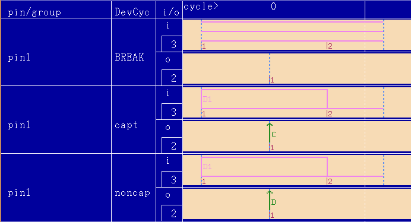

Selective Capture with Fixed Timing
You can set up selective capture with fixed timing or equation based timing. If you set up the selective capture with fixed timing you have to ensure that the naming of the selective capture edges is correct. To make the naming for the edge actions correct, C for capture and D for do not capture, you have to open the timing file located in the subfolder timing of your device folder, in an editor (vi, NEdit, etc.). After changing the receive actions at the selective capture edge, you have to save the updated timing. To use the updated timing file, you load the timing file in the Test Program Explorer.
The figure below shows you the fixed timing setup with the correct naming of the selective capture receive edges.

You will see that both receive edges have different names. The first edge has now C for capture and the second D for do not capture.
This is the source code of the timing file, which is displayed in the figure above:
hp93000,timing,0.1 PCLK 1,1,100,(@) CLKR 1,100,10 WFDS 1,0,,"d1:D11 d2:F0N r1:C",(pin1) WFDS 1,1,,"d1:D11 d2:F0N r1:D",(pin1) WAVE 1,0,F00,,,,0,(pin1) WAVE 1,0,F10,,,,1,(pin1) WAVE 1,1,F00,,,,2,(pin1) WAVE 1,1,F10,,,,3,(pin1) BWDS 1,,,"",(pin1) ETDS 1,1,,"d1:10 d2:79 r1:47.5",(pin1) DCDF 1,"capt","0",(pin1) DCDF 1,"noncap","1",(pin1) DCDT 1,"" TSUX 1,1